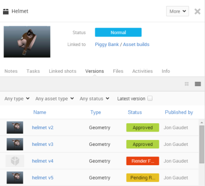
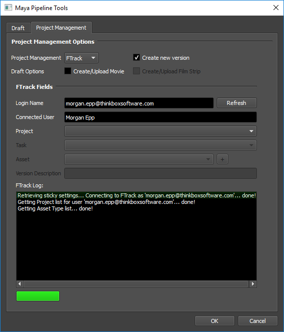
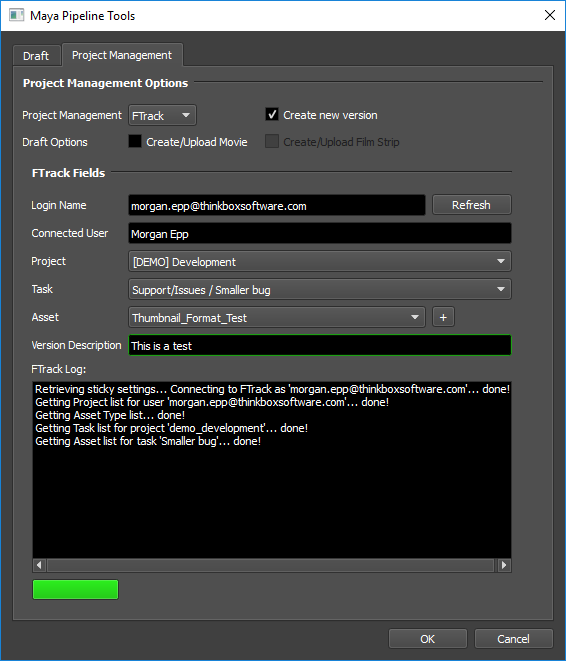
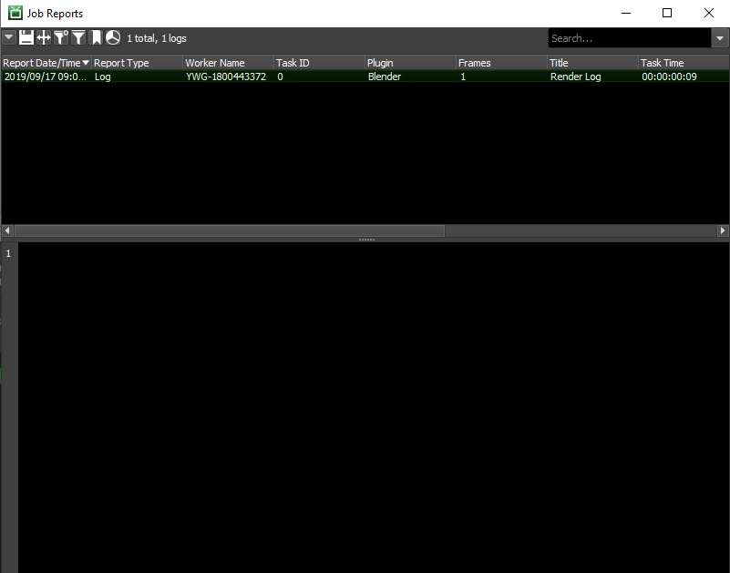
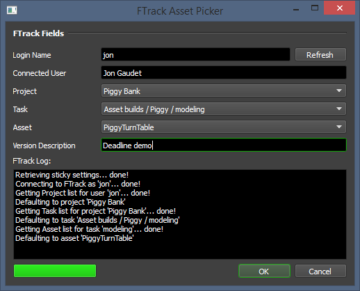
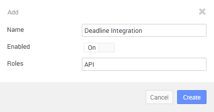
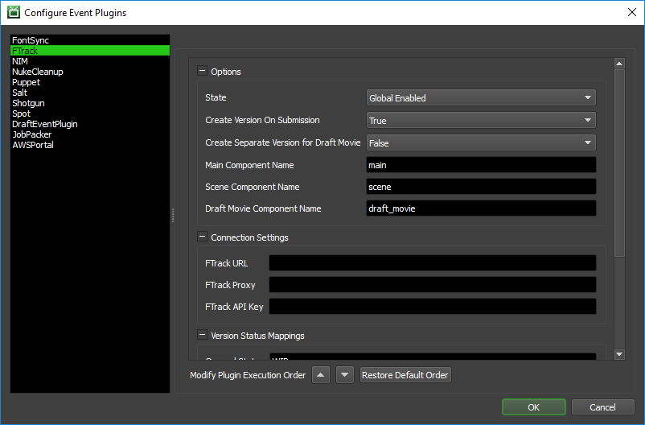
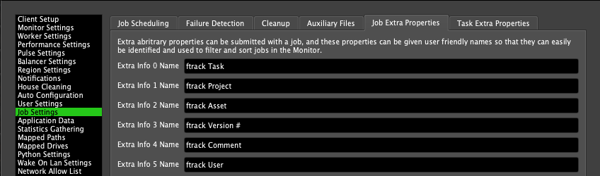

FTrack¶
Overview¶
FTrack is a cloud-based Project Management tool that provides Production Tracking, Asset Management, and Team Collaboration tools to digital studios; see the FTrack website for more information.
Using Deadline’s FTrack event plugin, artists can automatically create new Asset Versions in FTrack when they submit a render Job to the farm. When a Job completes, Deadline will automatically update associated Asset Versions with a proper Status, Thumbnail, and Components (if the output location is known).
Creating Versions¶
Versions can either be created automatically on submission (using the FTrack Event Plugin), or done manually afterwards.
Automatic Version Creation¶
When you submit a new job to Deadline, you can have Deadline automatically create a new Asset Version in FTrack. This is done by connection to FTrack during the submission process, and selecting the Asset to which the Job should be tied. The majority of the submission scripts that ship with Deadline include the FTrack connection option. For this example, we will use Maya, but the process is basically the same for each submission script.
First, open the Pipeline Tools window via the Pipeline Tools button and navigate to the Project Management tab.

Choose FTrack from the Project Management drop down, and then check the “Create new version” checkbox to begin. Enter your FTrack Login Name and press Connect. If the connection is successful, Deadline will collect the list of Projects and Tasks you are assigned to. If there are problems connecting, Deadline will try to display the appropriate error message to help you diagnose the problem.
After you have selected a Task and Asset, you must specify a Version Description.
After you have configured the Version information, press OK to return to the Maya submitter. The FTrack settings will now contain the Version information you just specified. To include this information with the job, leave the Create New Version option enabled. If you want to change the Version name or description before submitting, you must first reconnect to FTrack in the Pipeline Tools window.
Press the Submit Job button in the Maya submitter to finish the submission. If the FTrack event plugin is configured to create the new version during Submission, the log report from the FTrack event plugin will show the Version’s ID. Otherwise, the Version won’t be created in FTrack until the job completes.
You can view the log report for the job by right-clicking on the job in the Monitor and selecting View Job Reports.
Manual Version Creation¶
You can also create an Asset Version and tie it to a Job after submission, from the Deadline Monitor. To do this, simply right-click on the job and select ‘Scripts’ -> ‘Integration’ -> ‘Create FTrack Version’. This will bring up an FTrack browser so that you can connect, pick the appropriate asset, and set a description. After specifying the required information, just press OK and the new Version should be created.
Setup¶
In order to be able to create versions within Deadline, you must first follow the steps below to setup Deadline’s connection to FTrack.
Create API Key¶
The first thing you need to do is create an API Key in FTrack. This will be used by Deadline to authenticate when connecting to the FTrack API.
To create a new API Key, you need to navigate to the ‘API Keys’ page, located under the ‘Security’ header of FTrack’s Settings section. Once this page is displayed, press the ‘Create’ button to create a new key; while you could re-use an existing key, it is recommended that you create a separate one for Deadline.
The name of the key doesn’t matter much (as long as it’s descriptive), but make sure Enabled is set to ‘On’ and that you select the ‘API’ role. Once you’ve filled in all the values, click the ‘Create’ button to finalize the key’s creation.

Once you’ve created the new entry, take note of its ‘Key’ value – you will need this when configuring Deadline in the next step.
Configure Deadline¶
Once you’ve created an API Key as detailed above, you can now set up the Event Plugin to connect to FTrack. To perform this setup, you need to enter Power User Mode (from the Tools menu), and then select ‘Tools’ -> ‘Configure Events’. Once in the Event Plugin Configuration window, select ‘FTrack’ from the list on the left.
This is where you will configure all the FTrack relevant settings in Deadline. There are several different categories of settings you can configure; they are described in more detail below.
Options
This section contains general high-level options that control the behaviour of the Deadline’s FTrack integration.
State: There are two different states that an Event Plugin can be in: Global Enabled or Disabled. In order for this feature to function properly, the State must be set to Global Enabled.
Create Version On Submission: This setting controls when an Asset Version is created in FTrack. If this is ‘True’, they will be created when a Job is submitted. On the other hand, if this is ‘False’, the Asset Version will only be created when the Job is Completed.
Create Separate Version for Draft Movie: This setting control what version Draft Movies are uploaded to. If this is ‘True’, the movie will be uploaded to a separate version than the rest of the components.
Main Component Name: Specifies the name to use if only a single component is created.
Scene Component Name: Specifies the name to use for the scene if it is submitted as a component.
Draft Movie Component Name: Specifies the name to use for a component when uploading a rendered Draft movie.
Connection Settings
This section contains information that Deadline uses to connect to the FTrack API; these settings must be configured properly in order for this feature to work at all.
FTrack URL: This is the URL which you use to connect to your FTrack installation.
FTrack Proxy: The proxy you use to connect to FTrack. This is only relevant if you use a Proxy; if in doubt, leave this field blank.
FTrack API Key: This is where you must enter the API Key created in the ‘Create API Key’ step. If using the Deadline Secrets Management feature, this parameter will be saved and retrieved based on the Event Plugin Secrets Access Level.
Version Status Mappings
This section contains mappings from Deadline Job Statuses to FTrack Asset Version Statuses. These are not necessary, but if specified, Deadline will update the status of Asset Versions as Deadline Jobs change status (based on the mappings provided).
Rename ExtraInfo Columns¶
The FTrack integration uses ExtraInfo columns 0-5 to display relevant information about the Asset Versions that are tied to Deadline Jobs. Given that “ExtraInfo0” isn’t exactly a descriptive name for what that column is being used for in this context, many people find it useful to rename these columns to be more descriptive.
To do so, you must be in Power User mode and select ‘Tools’ -> ‘Repository Options’. You must then go to the ‘Job Settings’ section, and select the ‘Extra Properties’ tab; from here you’ll be able to change these column names to something more appropriate.
Error Messages and Meanings¶
This is a collection of known FTrack error messages and their meanings, as well as possible solutions. We want to keep this list as up to date as possible, so if you run into an error message that isn’t listed here, please contact Deadline Support and let us know.
Currently, no error messages have been reported for this event plugin.

{kind=link}
{kind=link}
{kind=link}
{kind=link}
{kind=link}
{kind=link}
{kind=link}
{kind=link}